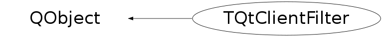

class TQtClientFilter: public QObject
QtClientFilter provides QOject event filter to map Qt and ROOT events (see: http://doc.trolltech.com/4.3/qobject.html#installEventFilter )
Function Members (Methods)
public:
| TQtClientFilter() | |
| virtual | ~TQtClientFilter() |
| void | AppendButtonGrab(TQtClientWidget*) |
| static TClass* | Class() |
| static TQtClientWidget* | GetButtonGrabber() |
| static TQtClientWidget* | GetPointerGrabber() |
| static void | GrabPointer(TQtClientWidget* grabber, UInt_t evmask, Window_t confine, QCursor* cursor, Bool_t grab = kTRUE, Bool_t owner_events = kTRUE) |
| virtual TClass* | IsA() const |
| static TQtPointerGrabber* | PointerGrabber() |
| void | RemoveButtonGrab(QObject*) |
| static void | SetButtonGrabber(TQtClientWidget* grabber) |
| virtual void | ShowMembers(TMemberInspector& insp) |
| virtual void | Streamer(TBuffer& b) |
| void | StreamerNVirtual(TBuffer& b) |
protected:
| void | AddKeyEvent(const int& event, TQtClientWidget* widget) |
| bool | eventFilter(QObject* o, QEvent* e) |
| static Bool_t | IsGrabSelected(UInt_t selectEventMask) |
| TQtEventQueue* | Queue() |
| void | RestoreLostGrabbing(Event_t& event) |
| static Bool_t | SelectGrab(Event_t& event, UInt_t selectEventMask, int& me) |
| void | SetKeyGrabber(TQtClientWidget* grabber) |
| void | UnSetKeyGrabber(TQtClientWidget* grabber) |
private:
| TQtClientFilter(const TQtClientFilter&) | |
| void | operator=(const TQtClientFilter&) |
Data Members
protected:
| UInt_t | fInputEventMask | |
| TQtClientWidget* | fKeyGrabber | |
| TQtNextEventMessage* | fNotifyClient | |
| TQtEventQueue* | fRootEventQueue | |
| static TQtClientWidget* | fgActiveGrabber | |
| static TQtClientWidget* | fgButtonGrabber | |
| static QCursor* | fgGrabPointerCursor | |
| static UInt_t | fgGrabPointerEventMask | |
| static Bool_t | fgGrabPointerOwner | |
| static TQtPointerGrabber* | fgGrabber | |
| static TQtClientWidget* | fgPointerGrabber |
Class Charts
{kind=link}
{kind=link}
{kind=link}
{kind=link}

Function documentation
void AddKeyEvent(const int& event, TQtClientWidget* widget)
bool eventFilter(QObject* o, QEvent* e)
Dispatch The Qt event from event queue to Event_t structure Not all of the event fields are valid for each event type, except fType and fWindow.
void GrabPointer(TQtClientWidget* grabber, UInt_t evmask, Window_t confine, QCursor* cursor, Bool_t grab = kTRUE, Bool_t owner_events = kTRUE)
Set the X11 style active grabbing for ROOT TG widgets
void RemoveButtonGrab(QObject* )
void operator=(const TQtClientFilter& )
TQtClientFilter(const TQtClientFilter& )
void RestoreLostGrabbing(Event_t& event)